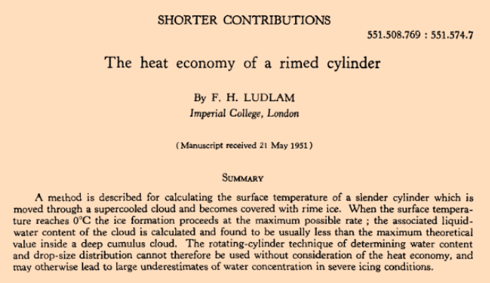

"The rotating-cylinder technique of determining water content and drop-size distribution cannot therefore be used without consideration of the heat economy"

F. H. Ludlam, "The Heat Economy of a Rimed Cylinder" 1
Summary
Various "Ludlam Limits" have been implemented, but they …
"The equations were found to fit the experimental data over a wider range of values..." 1
Summary
The correlations for water drop impingement on a cylinder from
"Mathematical Investigation of Water Droplet Trajectories" 1
are implemented in the Python programming …
"This effect would be expected if the droplets were of non-uniform size, since the largest droplets could reach the largest collector while those of average size could not." 1
Summary
The calculations to determine drop median volumetric diameter with a …
"The rotating-cylinder method of measuring liquid water content is generally regarded as being the most accurate and dependable procedure thus far developed"
“A Flight Investigation of the Meteorological Conditions Conducive to the Formation of Ice on Airplanes"
"Many data points were carefully calculated in order to determine precisely the rate of droplet impingement on the surface of a right circular cylinder."
"Impingement of Water Droplets on a Cylinder in an Incompressible Flow Field and Evaluation of Rotating …
>"a method has been developed ... to determine the droplet size distribution of the impinging cloud"
"A Dye-Tracer Technique for Experimentally Obtaining Impingement Characteristics of Arbitrary Bodies and a Method for Determining Droplet Size Distribution" 1
"... the effect on final results of droplets that do not freeze completely on the cylinders"
"Impingement of Cloud Droplets and Procedure for Measuring Liquid-Water Content and Droplet Sizes in Supercooled Clouds by Rotating Multicylinder Method. "1
"It has been shown that the temperature of the surface of the wing in conditions of icing can be predicted with considerable exactitude from the temperatures measured in clear air."
"An Analysis of the Dissipation of Heat in Conditions of …
"Aircraft icing is one of the major weather hazards to aviation. Icing is a cumulative hazard. It reduces aircraft efficiency by increasing weight, reducing lift, decreasing thrust, and increasing drag."
"... the recommendation was made that before attacking what appeared to be a new icing problem we should study the icing work of the 1940's and 50's." 1
Summary
A "Selected Bibliography of NACA-NASA Icing Publications" identified 132 publications in 16 …
"Upon comparing this chart with Langmuir's tables (reference 7), it was found that his selections of the representative radii for the various sub-divisions of the volume were in error." 1
Summary
The Langmuir B drop size distribution is almost a …
"The subject of aircraft ice protection has provoked much controversy and discourse among theorists, designers, laboratory and test engineers, and flight operations people." 1
Abstract
("Summary" in the orignal).
The subject of aircraft ice protection has provoked much controversy
and …